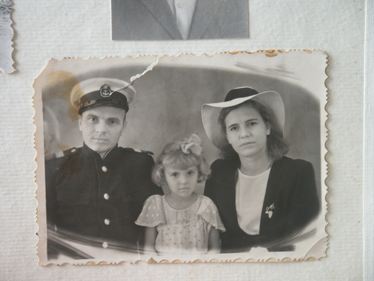
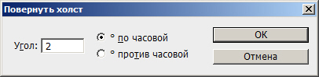
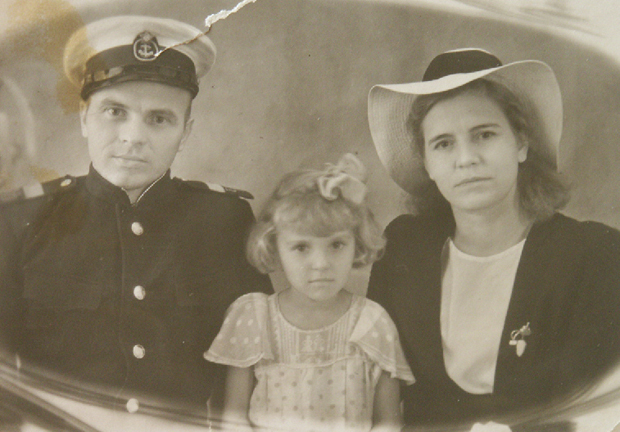
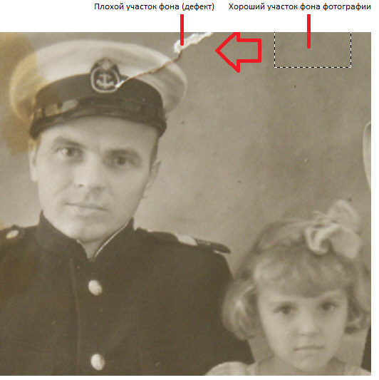
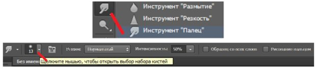
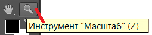
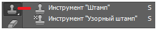
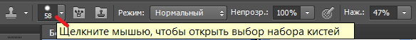
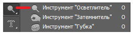
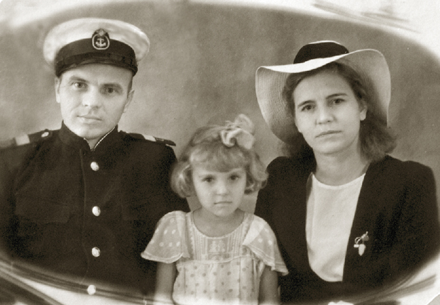

Лекция 7: Реставрация и ретушь поврежденных изображений
Новый термин
Ретушь (франц. Retouche) - исправление изображений (рисунков, фотоснимков и т.п.) Реставрация (лат. Restavratio) - восстановление). При работе в Photoshop с дефектными фотографиями часто эти два слова употребляют как синонимы.
Ретушь изображений процесс творческий, непростой, требующий умения использовать не один, а многие инструменты. Алгоритмы работы здесь могут быть самые разные и общее правило только одно: при ретушировании любых изображений устраняются сначала глобальные (большие) дефекты, затем - локальные (мелкие). Основные способы ретуши для цветных и черно-белых фотографий одинаковы.
Пример выполнения компьютерной ретуши фотоизображения
На рис. 7.1 показана исходная фотография для работы. На старом снимке из домашнего фотоальбома мы видим неудачное кадрирование, пятна, трещины, измятость фото и другие недостатки. Начнем поэтапное (пошаговое) исправление перечисленных дефектов.
Рис. 7.1. Оригинальная фотография для ретуши
Поворот и новое кадрирование (обрезка) изображения
Мы видим, что снимок примерно на 2 градуса повернут влево (против часовой стрелки). Для исправления дефекта выполним команду Изображение-Вращение изображения-Повернуть холст-Произвольно и выберем угол 2 градуса по часовой - рис. 7.2.
Рис. 7.2. Окно команды Повернуть холст
Для удаление второстепенных деталей изображения, случайно попавших в кадр, нажмите на горячую клавишу "C" для активизации инструмента Рамка. Затем нажмите на кнопку мыши и очертите область изображения, содержащую сюжетно важную часть фотографии и нажмите на клавишу Enter. Снимок будет обрезан ( рис. 7.3).
Рис. 7.3. Поворот и кадрирование произведены
Устраняем крупные и мелкие пятна
Большие пятна на фотографии удобно убирать инструментом Область (М). При ретуши используют две разновидности этого инструмента - Овальная область и Прямоугольная область. Выделите с их помощью фрагмент хорошо изображенного фона (без пятен). Затем, используя команду Редактирование-Скопировать скопируйте его в буфер обмена (clipboard). Далее выберите команду Редактирование-Вставить для создания дубля области хорошего фона и, используя инструмент Перемещение, перетащите его на место пятна. В результате пятно закроется областью хорошего фона ( рис. 7.4). После завершения операции устранения крупных пятен на фотографии выполните команду Слои-Выполнить сведение. Последняя команда совмещает (интегрирует) все созданные в процессе работы слои с фоновым слоем.
Рис. 7.4. Копируем часть хорошего фона на дефект
Для ретуши мелких пятен следует воспользоваться инструментом Палец с целью удаления мелких дефектов путем их размазывания. Выберите на панели графики инструменте Палец и выполните настройку его атрибутов с помощью панели свойств: задайте режим - Нормальный, снимите флажок Рисование пальцем, установите значение параметра Интенсивность равным 50% и выберите из списка кисть, соизмеримую с размером реставрируемых пятен ( рис. 7.5).
Рис. 7.5. Инструмент Палец и Палитра его свойств
Выполните удаление пальцем пятен на снимке путем их растушевки (размазывания). Мелкие пятна можно удалять также инструментом Размытие. Он в одной группе с инструментом палец.
Устранение на фотографии царапин и трещин
Будем считать, что с глобальными дефектами вы справились. Теперь пора перейти к коррекции локальных дефектов. Начнем с трещины на фуражке офицера. Ее нельзя просто взять и заклеить фоном. Для начала подберите удобный для работы масштаб изображения, комбинируя нажатие комбинаций клавиш Ctrl+"+" (увеличение масштаба) и Ctrl-"-" (уменьшение масштаба). Другой вариант - использовать инструмент Масштаб (Z) рис. 7.6.
Рис. 7.6. Инструмент Масштаб
Теперь найдите на панели инструментов Штамп (S) - рис. 7.7.
Рис. 7.7. Инструмент Штамп
Установите на панели свойств этого инструмента значения его атрибутов: Непрозрачность - 100%, режим клонирования - Нормальный и настройте размер кисти в соответствии с размером дефекта, выбрав небольшую мягкую кисть из раскрывающегося списка параметров кисти ( рис. 7.8).
Рис. 7.8. Часть Панели свойств инструмента Штамп
Удерживая нажатой клавишу Alt, щелкните мышью (при этом курсор изменит свою форму) на фрагменте "хорошей" области фуражки, расположенной в непосредственной близости с дефектной областью. Этим вы устанавливаете источник (место из которого будем брать изображение). Затем отпустите клавишу Alt и щелкните мышью на области царапины. На участок царапины, который вы указали мышью, накладывается выбранный вами источник изображения, исправляя данный дефект.
Совет
Если во время работы штампом вы выполнили неверный шаг, то воспользуйтесь возможностью отката. Для этого выберите команду Редактирование-Шаг назад или используйте комбинацию клавиш Alt+Ctrl+Z.
Таким же способом или, используя знакомый вам инструмент Восстанавливающая кисть, можно устранить на фотографии практически все пятна, царапины и трещины. Помимо этого, некоторые тени на фуражке имеет смысл осветлить инструментом Осветлитель (O) - рис. 7.9.
Рис. 7.9. Инструмент Осветлитель
Конечный результат ретуши теперь выглядит так ( рис. 7.10).
Рис. 7.10. На снимке удалены царапины и пятна
Примечание
Работу можно было бы продолжить, например, увеличить резкость фотографии фильтрами, добавить рамку и так далее. Но, мы этого делать не будем.